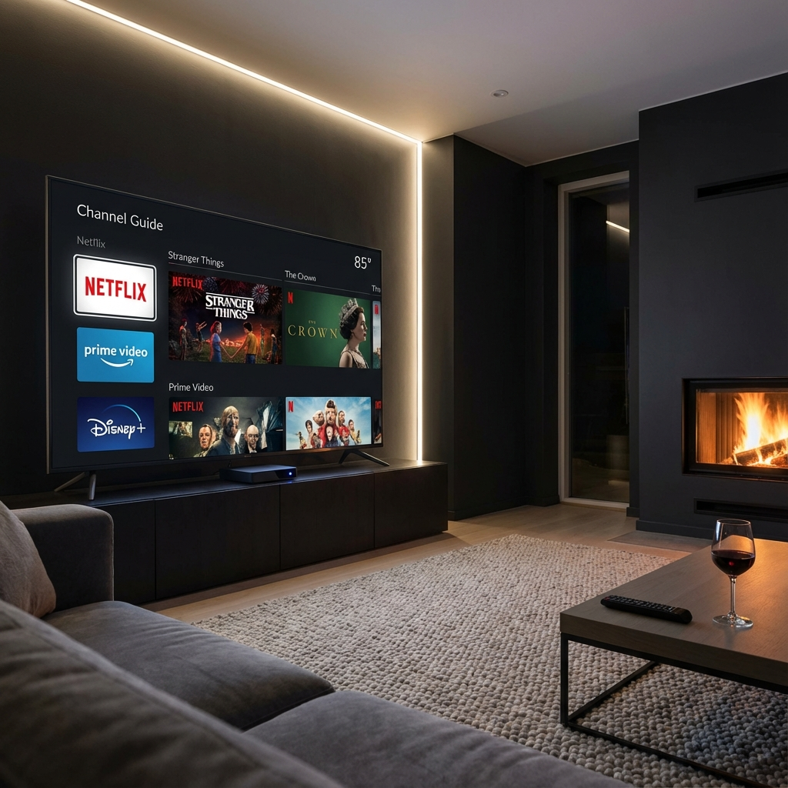

Choisir le bon boîtier IPTV est essentiel pour profiter pleinement de votre abonnement IPTV Québec. Avec tant d'options sur le marché, il est facile de se perdre entre les Android Box, Fire TV Stick, Apple TV et autres appareils de streaming. Ce guide comparatif vous aidera à faire le meilleur choix en 2026.
Un bon décodeur IPTV doit offrir une performance stable, une interface fluide et une compatibilité parfaite avec les applications de streaming. Voyons ensemble les critères à considérer et les meilleurs modèles disponibles.
Critères de sélection d'un boîtier IPTV
Avant de passer à l'achat, voici les critères essentiels à évaluer:
Performance et processeur
- Processeur quad-core minimum - Pour un streaming fluide en HD et 4K
- RAM 2 Go ou plus - Évite les ralentissements lors du zapping
- Stockage 8 Go+ - Pour installer plusieurs applications IPTV
Connectivité
- Wi-Fi double bande (2.4 GHz et 5 GHz) - Connexion plus stable
- Port Ethernet - Optionnel mais recommandé pour performance optimale
- Bluetooth - Pour connecter télécommandes et périphériques
- USB - Pour lecteurs externes et stockage additionnel
Système d'exploitation
- Android TV - Le plus flexible, accès au Play Store
- Fire OS - Basé sur Android, optimisé par Amazon
- tvOS - Apple uniquement, très fluide mais limité
💡 Notre conseil: Privilégiez un appareil avec Android TV certifié ou Fire OS pour une compatibilité maximale avec les applications IPTV comme IPTV Smarters Pro ou TiviMate.
Top 5 des meilleurs boîtiers IPTV en 2026
Après avoir testé des dizaines d'appareils, voici notre sélection des meilleurs boîtiers IPTV disponibles au Québec:
1. Amazon Fire TV Stick 4K Max (Meilleur rapport qualité/prix)
Le Fire TV Stick 4K Max offre un excellent équilibre entre prix et performance. Avec son processeur puissant et le Wi-Fi 6E, il garantit un streaming 4K sans buffering.
- Prix: ~70$ CAD
- Résolution: 4K Ultra HD, HDR10+, Dolby Vision
- RAM: 2 Go
- Wi-Fi 6E intégré
- Alexa Voice Remote incluse
2. Nvidia Shield TV Pro (Le plus puissant)
Le Nvidia Shield TV Pro est le choix des passionnés. Son processeur Tegra X1+ offre des performances inégalées pour le streaming et le gaming.
- Prix: ~280$ CAD
- Résolution: 4K HDR, Dolby Vision, Dolby Atmos
- RAM: 3 Go
- Stockage: 16 Go (extensible)
- Ports: 2x USB 3.0, Gigabit Ethernet
- Upscaling AI en 4K
3. Apple TV 4K (Pour l'écosystème Apple)
Si vous êtes dans l'écosystème Apple, l'Apple TV 4K offre une intégration parfaite avec vos autres appareils. L'interface est fluide et les finitions premium.
- Prix: ~200$ CAD
- Puce A15 Bionic
- RAM: 4 Go
- Wi-Fi 6, Ethernet Gigabit
- AirPlay, HomeKit intégrés
4. Chromecast avec Google TV (Budget friendly)
Le Chromecast avec Google TV est idéal pour les petits budgets. Malgré son prix accessible, il offre une expérience Android TV complète.
- Prix: ~50$ CAD
- Résolution: 4K HDR
- RAM: 2 Go
- Interface Google TV intuitive
- Télécommande vocale incluse
5. Formuler Z11 Pro Max (Spécialisé IPTV)
Le Formuler Z11 Pro Max est conçu spécifiquement pour l'IPTV. Son application MyTV Online 3 offre une des meilleures expériences du marché.
- Prix: ~200$ CAD
- Processeur Octa-core
- RAM: 4 Go
- Stockage: 32 Go
- Android 11
- Application IPTV préinstallée

Comparatif détaillé
Voici un résumé comparatif pour vous aider dans votre choix:
Pour le meilleur rapport qualité/prix: Fire TV Stick 4K Max
Pour les performances maximales: Nvidia Shield TV Pro
Pour l'écosystème Apple: Apple TV 4K
Pour les petits budgets: Chromecast avec Google TV
Pour une expérience IPTV dédiée: Formuler Z11 Pro Max
Compatibilité avec VotreSite
Tous ces appareils sont 100% compatibles avec notre service IPTV VotreSite. Notre équipe de support peut vous aider à configurer n'importe lequel de ces boîtiers en quelques minutes.
Quel budget prévoir?
Le budget pour un boîtier IPTV dépend de vos besoins:
- Entrée de gamme (40-70$) - Fire TV Stick Lite, Chromecast - Suffisant pour le HD
- Milieu de gamme (70-120$) - Fire TV Stick 4K Max, Fire TV Cube - Idéal pour la 4K
- Haut de gamme (200-300$) - Nvidia Shield, Formuler, Apple TV - Performance maximale
⚡ Astuce budget: Un Fire TV Stick 4K Max à ~70$ combiné à un abonnement VotreSite Premium vous coûtera moins cher qu'un seul mois de câble traditionnel, tout en offrant plus de 25,000 chaînes!
Vous avez trouvé votre boîtier?
Il ne vous reste plus qu'à choisir votre forfait IPTV. Profitez de 25,000+ chaînes en HD/4K avec activation instantanée!
Voir les forfaitsConclusion et recommandation
En 2026, le choix d'un boîtier IPTV au Québec n'a jamais été aussi simple. Pour la majorité des utilisateurs de Montréal, Québec ou Sherbrooke, le Fire TV Stick 4K Max représente le meilleur investissement: prix abordable, excellentes performances 4K, et compatibilité parfaite avec tous les services IPTV.
Si vous êtes un passionné de home cinéma et que le budget n'est pas un problème, le Nvidia Shield TV Pro reste le roi incontesté avec ses capacités d'upscaling AI et ses performances brutes.
Quel que soit votre choix, assurez-vous de choisir un service IPTV fiable pour accompagner votre nouvel appareil. Chez VotreSite, nous offrons un essai gratuit de 24h pour que vous puissiez tester la qualité de notre service sur votre boîtier avant de vous engager.
N'hésitez pas à contacter notre support technique si vous avez des questions sur la configuration de votre appareil. Notre équipe est disponible 24/7 pour vous aider!